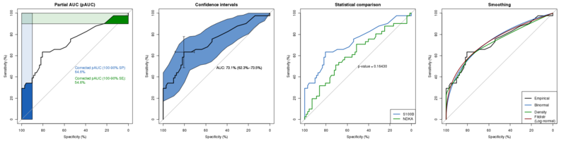

pROC is a set of tools to visualize, smooth and compare receiver operating characteristic (ROC curves). (Partial) area under the curve (AUC) can be compared with statistical tests based on U-statistics or bootstrap. Confidence intervals can be computed for (p)AUC or ROC curves.

More screenshots and examples…
If you use pROC in published research, please cite the following paper:
Xavier Robin, Natacha Turck, Alexandre Hainard, Natalia Tiberti, Frédérique Lisacek, Jean-Charles Sanchez and Markus Müller (2011). pROC: an open-source package for R and S+ to analyze and compare ROC curves. BMC Bioinformatics, 12, p. 77. DOI: 10.1186/1471-2105-12-77.
pROC comes in two flavours: a command line version for the R statistical software environment, and a graphical user interface (GUI) for S+.
R |
S+ (deprecated) |
|---|---|
This version is intended for the R command line.
InstallationThere is no need to download the package. The installation can be done in one command directly from R: install.packages("pROC")
The package must then be loaded with: library(pROC) To get help, enter the following in the R prompt: ?pROC UpdateAny of the following commands will update pROC if possible: install.packages("pROC")
update.packages() # will install updates to all your packages |
This version is for TIBCO Spotfire S+. It has a graphical user interface (GUI) for S+ 8.2 32bits for Windows, but the command line is also available. Deprecation warningThe S+ version is not maintained any longer due to diverging code bases and apparent drop of support of S+ by TIBCO but still contains the main features of pROC (especially power tests). The GUI is available only on the 32 bits version of S+ 8.2 for Windows (no Linux / Mac / 64 bits support).
InstallationIn the S+ command prompt (in Windows, you can open it from S+ install.pkgutils() Save the installation file (binary for Windows, source for Linux) in your working directory and then type: install.packages("pROC_1.4.9_S_WIN386.zip") # Or for the source version:
After loading from the library(pROC) More details about installation… UpdateRepeat the installation steps described above, except the |
ci.coords with x="best" would fail if one or more resampled ROC curve had multiple "best" thresholds (thanks Berend Terluin for the report)ci.coords: passing more than one value in x now worksdirection argument to roc (thanks Le Kang for the report)roc.test, power.roc.test, ci.auc, var and cov function (no large matrix allocation)auc and ci objects (see ?groupGeneric.pROC)formula for roc.formula can now provide several predictors and a list of ROC curves will be returnedci.coords with examplespower.roc.test function for sample size and power computations.cov and var functions supports new "obuchowski" method.ci.coords function to compute CI of arbitrary coords.coords accepts new ret value "1-accuracy".?roc for more details on the trade-offs of the different methods.roc.test, ci, var and cov function (thanks Kazuki Yoshida).are.paired now also checks for identical levels.smooth.roc curves.tcltk seems broken (thanks Gerard Smits for the report).roc.test, cov or var was passed an auc' object.
coords (thanks to Kosuke Yoshihara for the report).cov and var functions.coords accepts new ret values: "accuracy", "tn", "tp", "fn", "fp", "npv", "ppv", "1-specificity", "1-sensitivity", "1-npv", "1-ppv", "npe" and "ppe".legacy.axes argument to plot 1-specificity rather than specificity.axes argument to turn off the plotting of the axis.logcondens and logcondens.smooth (Univariate Log-Concave Density Estimation) smoothing methods.has.partial.auc to determine if an AUC is full or partial.drop for coords.auc and multiclass.auc objects now also have secondary class numeric.direction=">".power.roc.test function for sample size and power computations.cov and var functions.auc objects now also have secondary class numeric.direction=">"roc.test generating NAs when smooth.rocs were used with reuse.auc=FALSE (thanks to Buddy for the report).roc.test.ordered factors anymore.best thresold is determined (best.method and best.weights in coords and print.thres.best.method and print.thres.best.weights in plot.roc).citation (S+ only).print now prints the response instead of response and more informative data in htests.ci.auc consumes much less memory.roc.test).print.auc printed incorrect CI in plot.roc (thanks to Alexander B. Leichtle for the report).coords when 2 or less points were selected.\dontrun{} in roc.test.smooth.roc. You can still turn it on with reuse.ci=TRUE.are.paired.coords (and plot.roc) with predictors containing more than 2 levels.venkatraman for roc.test.... not passed correctly in plot.ci.se with type="bars" resulting in an error (R only).method arguments for smooth.roc and ci.auc separately in roc.default (R-only).auc.polygon.* and max.auc.polygon.* arguments for polygon in plot.roc.ci.auc (with a GUI, S+ only)."aucs" item anymore.\dontrun{} blocks for faster (but less useful) checks execution.lines.roc functions for ROC.type argument for both lines.roc and plot.roc.print.auc.col argument to plot.roc.roc.test.default when the class of predictor1 had several elements.boot.n in the slowest examples and reuse.auc and reuse.ci arguments in smooth.roc.roc.Please report any bug you may encounter on the GitHub issue tracker.
?pROC on the R prompt.proc-r-package.